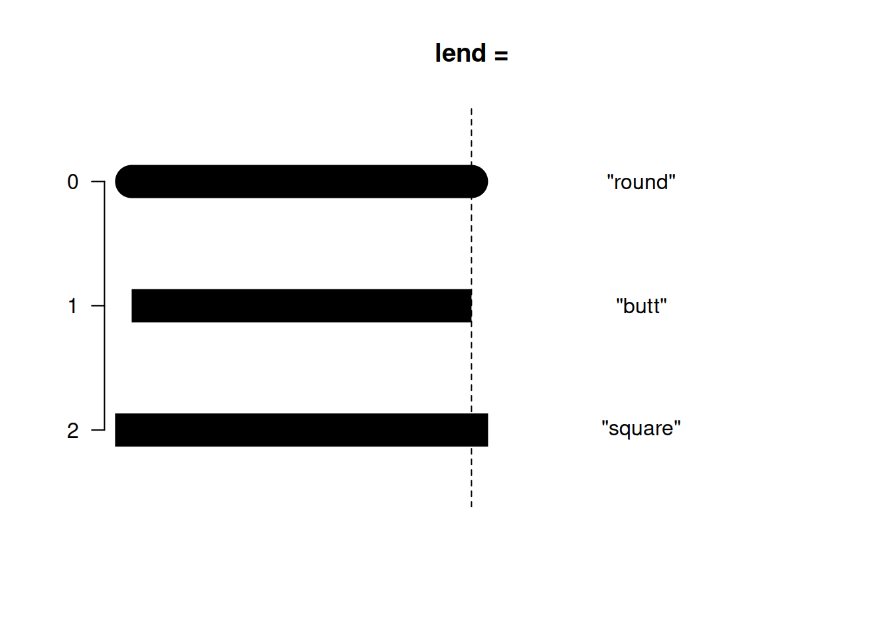
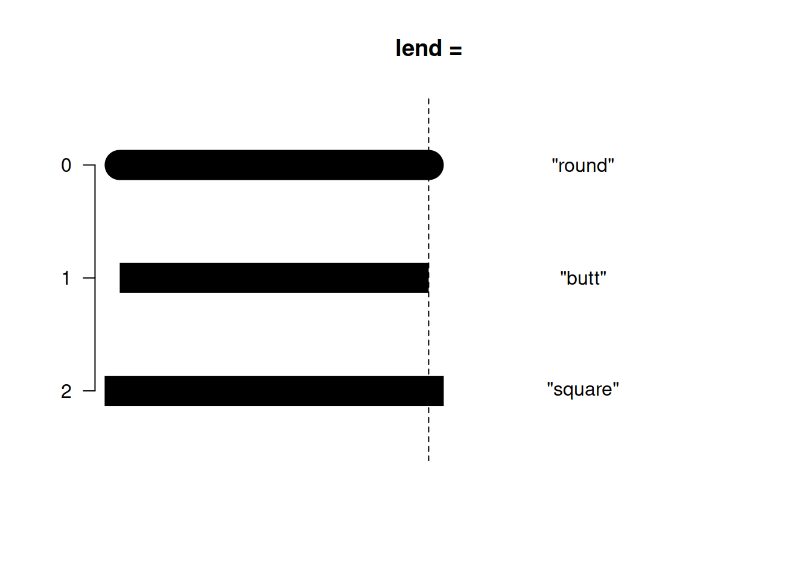
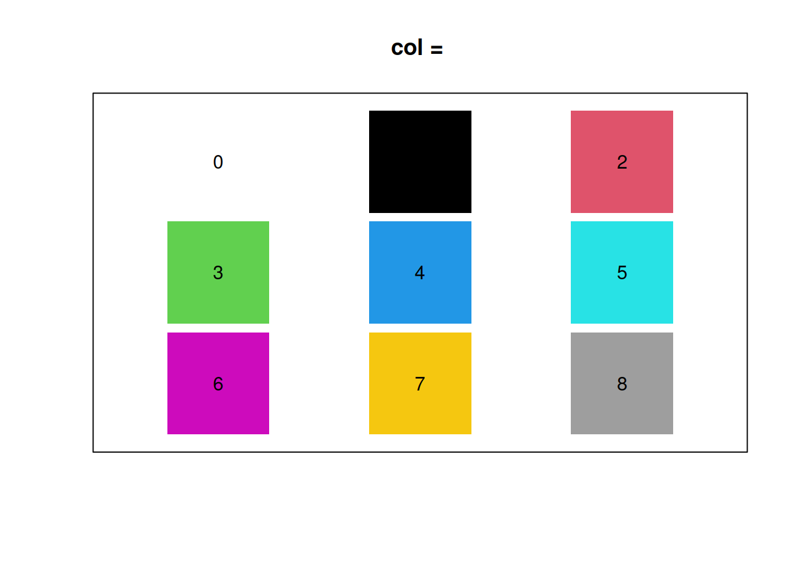
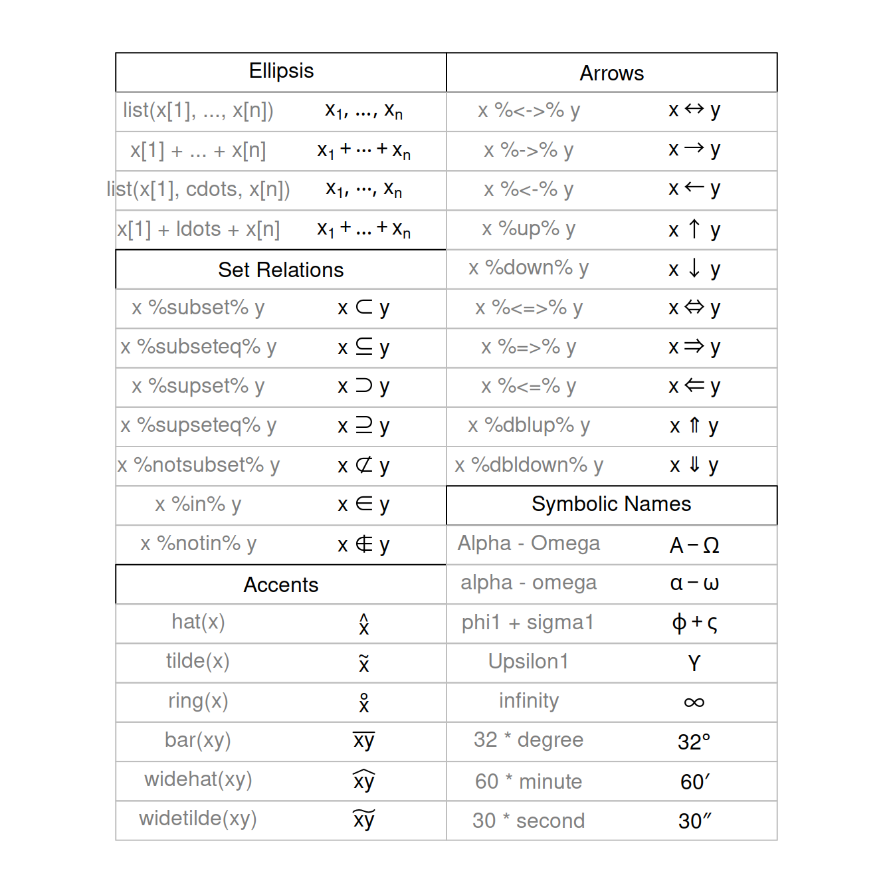
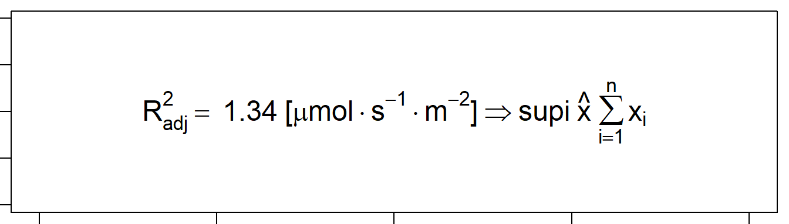
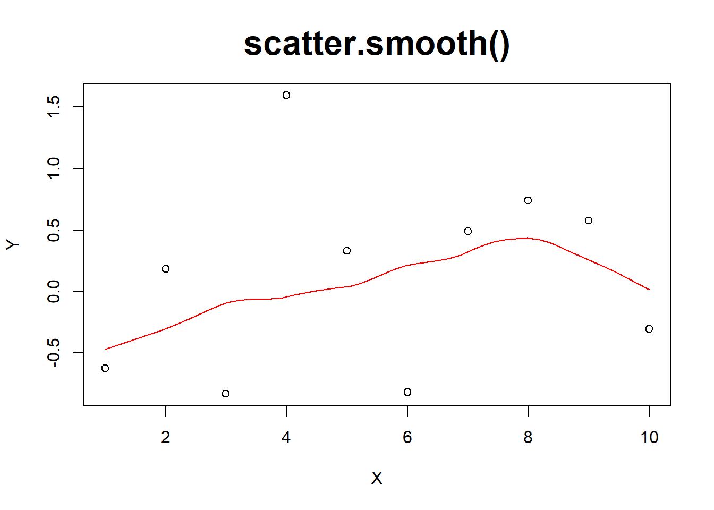
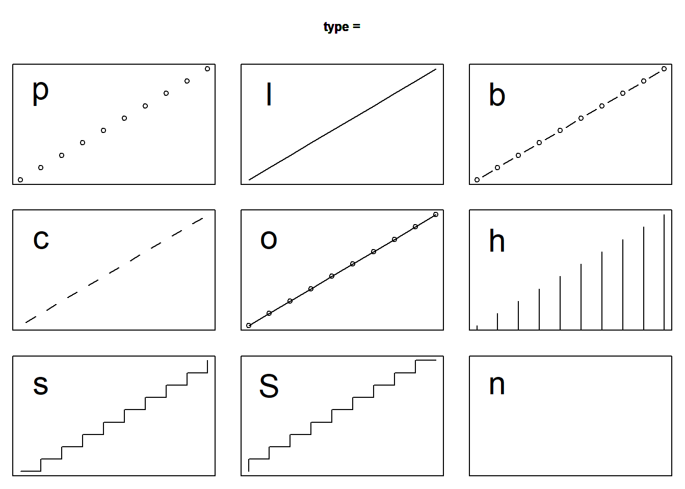
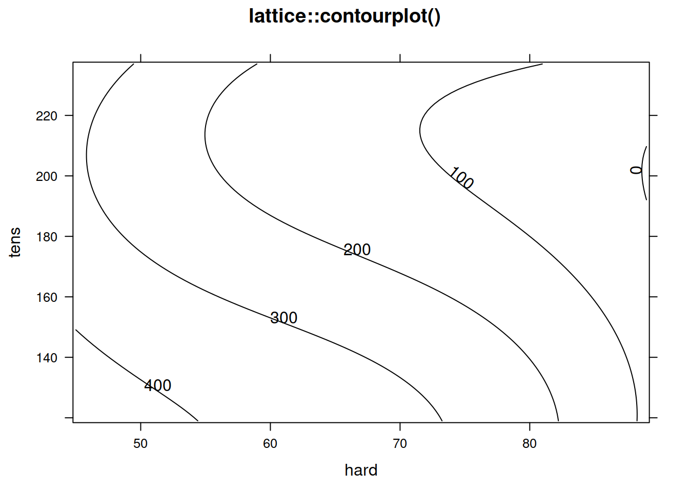
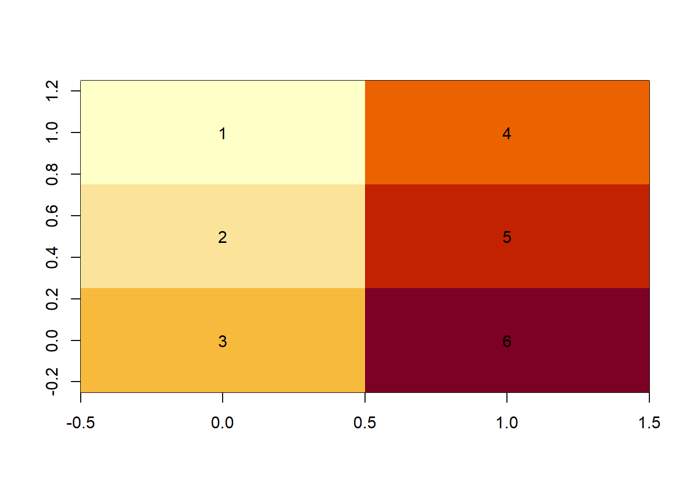

Chapter 16 Base graphics
16.1 Graphical parameters par()
Good overviews:
- Official Documentation
- Illustrated Documentation
- Book R in a Nutshell: A Desktop Quick Reference
16.1.1 Set graphical parameters
Change global option
change for local plot
When parameters are set, their previous values are returned in an invisible named list. Such a list can be passed as an argument to par to restore the parameter values.
reset default
check current parameter
## [1] FALSEThe parameters are defined for the currently active device
- Normally the Rstudio plot panel
- If
png()orpdf()opend ⇒ only within this document dev.off()closes device and resetpar()- If
png()orpdf()⇒ the sameparare active as they were before the devicepng()orpdf()was opend - If Rstudio panel ⇒ the default
parare active
- If
16.1.2 Default
16.1.3 Device
16.1.4 Device region
16.1.5 Coordinate sytem
There are in total 9 coordinate sytems
- absolute
- \((0,0)\) in lower left device corner
inchescan be converted to cm with functioncm()deviceusually in pixels (png) or points (pdf)linesbased onmex(relative to font size)charsbased oncex(font size)
- \((0,0)\) depend on what is plotted
useruser coordinates
- \((0,0)\) in lower left device corner
- normalized
ndcnormalized device coordinatesnicnormalized inner region coordinatesnfcnormalized figure coordinatesnpcnormalized plot coordinates
![Interval [0, 1] for different normalized coordinate systems](R_Ref_Book_files/figure-html/unnamed-chunk-90-1.png)
Figure 16.1: Interval [0, 1] for different normalized coordinate systems
Convert between coordinate system
Use grconvertX() to convert between different coordinate systems
16.1.6 Define device regions
Useful links: Device regions, fig and fin, oma and mgp
16.1.6.1 Split device
Several options (see here)
- array:
par(mfrow = c(2,2))(mfcolfills the array by columns)- use
par("mfg")to plot a specific field in the array
- use
- grid:
layout(matrix()) - arbitrary locations:
par(fig = ...)combined withpar(new=TRUE) split.screen()pairs()coplot()
Example for copy paste
par(mfrow = c(2, 2)) # 2-by-2 grid of plots
par(oma = c(4, 4, 0, 0)) # make room (i.e. the 4's) for the overall x and y axis titles
par(mar = c(2, 2, 1, 1)) # make the plots be closer together
# now plot the graphs with the appropriate axes removed (via xaxt and yaxt),
# remove axis labels (so that they are not redundant with overall labels,
# and set some other nice choices for graphics parameters
plot(runif(10), xlab = '', ylab = '', xaxt = 'n', las = 1, ylim = c(0, 1))
plot(runif(10), xlab = '', ylab = '', xaxt = 'n', yaxt = 'n', ylim = c(0, 1))
plot(runif(10), xlab = '', ylab = '', las = 1, ylim = c(0, 1))
plot(runif(10), xlab = '', ylab = '', yaxt = 'n', ylim = c(0, 1))
# print the overall labels
mtext('x-axis title', side = 1, outer = TRUE, line = 2)
mtext('y-axis title', side = 2, outer = TRUE, line = 2)Useful helper function
FunNewPar <- function(oma = c(0,0,2,2),
mar = c(4,4,0,0),
tcl = -0.3,
mgp = c(2,0.5,0),
cex.axis = 0.7,
ps = 10,
xpd = NA){
x <- par(oma = oma,
mar = mar,
tcl = tcl,
mgp = mgp,
cex.axis = cex.axis,
ps = ps,
xpd = xpd)
invisible(x)
}Multiple plots with everything
Multiple plots without axis title
Multiple plots without axis


16.1.6.2 Margins
Define margine area using lines coordinate system
Define margine area using inches coordinate system

Define margine area using ndc/nfc coordinate system
par("omd") # Start and endpoint of inner region c(x1, x2, y1, y2)
## [1] 0 1 0 1
par("fig") # Start and endpoint of figure region c(x1, x2, y1, y2)
## [1] 0 1 0 1
par("plt") # Start and endpoint of plot region c(x1, x2, y1, y2)
## [1] 0.1171429 0.9400000 0.2040000 0.8360000
Define region dimensions in inches
16.1.7 User coordinates limits
16.1.8 General appearence
16.1.9 Symbols
16.1.10 Lines
par("lty") # line type
## [1] "solid"
par("lwd") # line width
## [1] 1
par("col") # line color
## [1] "black"
par("lend") # line end type
## [1] "round"
par("ljoin") # line join style
## [1] "round"
par("lmitre") # detail to ljoin option "mitre"
## [1] 10 

16.1.11 Text
par("font") # text font
## [1] 1
par("family") # text font family
## [1] ""
par("cex") # magnifies text/symbols relative to default
## [1] 1
par("ps") # text pointsize
## [1] 12
par("col") # text color
## [1] "black"
par("srt") # string rotation in degrees (°)
## [1] 0
par("lheight") # vertical spacing in multi-line text
## [1] 1Point size of text = ps * cex
Point size of title = ps * cex * cex.main
Size of “lines” (coordinate system) = constant * cex * mex
Get new text families with packet extrafont (see here)
windowsFonts(MyFont = windowsFont("NameFromWord")), however with this way the new font cannot be printed to PDF.
16.1.12 Axis labels
par("font.lab")
## [1] 1
par("cex.lab")
## [1] 1
par("col.lab")
## [1] "black"
par("ann") # should there be any annotations (title, axis title)
## [1] TRUE
par("adj") # axis title position (0: left, 1: right)
## [1] 0.5
par("mgp") # position of 1) labels, 2) tick-mark labels, 3) tick marks (in lines)
## [1] 3 1 016.1.13 Axis
par("font.axis")
## [1] 1
par("cex.axis")
## [1] 1
par("col.axis")
## [1] "black"
par("xaxt") # should there be an axis ("n" suppresses axis)
## [1] "s"
par("las") # orientation of tick-mark labels (0: parallel, 1: horizontal, 2: perpendicular, 3: vertical)
## [1] 0
par("mgp") # position of 1) labels, 2) tick-mark labels, 3) tick marks (in lines)
## [1] 3 1 016.1.14 Ticks
par("mgp") # position of 1) labels, 2) tick-mark labels, 3) tick marks (in lines)
## [1] 3 1 0
par("tck") # length of tick marks (in npc), 1 => grid lines
## [1] NA
par("tcl") # length of tick marks (in chars), negative => look outside plot
## [1] -0.5
par("lab") # ≈ number of ticks per axis (x-axis, y-axis, unimplementent)
## [1] 5 5 7
par("xaxp") # look where ticks are plotted (lower xlim, upper xlim, nr of ticks minus 1)
## [1] 0 1 5
par("xaxs") # "r": xlim +/- 4%, "i": xlim
## [1] "r"
par("xlog") # log x axis
## [1] FALSE16.1.16 Title
16.1.17 R.O. (Read only)
par("cin") # character size (width, height) in inches
## [1] 0.15 0.20
par("cra") # character size (width, height) in pixels
## [1] 28.8 38.4
par("csi") # same as par("cin")[2]
## [1] 0.2
par("cxy") # character size (width, height) in user coordinate system
## [1] 0.02604167 0.06329114
par("din") # device dimensions (width, height) in inches
## [1] 7 5
par("page") # A boolean value indicating whether the next call to plot.new is going to start a new page
## [1] TRUE16.2 Colors
Very well explained here
Specify by:
- Name
- example
col = "black" - possible names:
colors()
- example
- Hexadecimal RGB code
- example
col = "#000000"=> black - format
"#RRGGBB" - RR, GG, BB are hexadecimal digits (00 to FF)
- example
- Index
- example
col = 1=> black - index gives colors position in
palette() palette()can be manipulated- restore default palette with
palette("default")
- restore default palette with
- Special: index 0 is background color
- example
Default palette:

Change palette
mycols <- gray.colors(n = 4, start = 0, end = 0.8)
palette(mycols) # change palette
plot(..., col = 1:4) # make plots using indices for colors
palette("default") # restore default palette16.2.1 Convert from/to different color specification
RGB
rgb()- converts RGB to hexadecimal
col2rgb()- converts R colors (hexadecimal, name, index) to RGB
HSV
hsv() converts HSV to hexadecimal
HCL
hcl() converts HCL to hexadecimal
16.2.2 Make new palettes
Create a vector of \(n\) continuous colors. All of them (except for gray.colors) have additionally an argument alpha for transparency.
Further palettes
hcl.colors- many different palettes implemented (including famous “viridis” palette)
hsv()/hcl()- fix 2 parameters and let one parameter continuously increase
16.3 Mathematical annotation
Useful helpfile: Mathematical annotation in R
If the text argument to one of the text-drawing functions (text, mtext, axis, legend, title) in R is an expression, the argument is interpreted as a mathematical expression and the output will be formatted according to TeX-like rules.
Functions to create objects of mode “expression”
expression()bquote()- same as
expression()but variables/terms wrapped in.()are evaluated
- same as
Importand special symbols in expressions
*connects two parts without a space~connects two parts with space^superscript[]subscript
An extensive overview can be found in the following tables. The columns of grey text show sample R expressions, and the columns of black text show the resulting output.


16.4 High level plots
Links:
Common high level plot functions
- 1D continuous
curve()hist()stripchart()dotchart()beeswarm::beeswarm()
- 1D discrete
barplot()spineplot()pie()
- 2D continuous - continuous
plot.default()scatter.smooth()matplot()pairs()
- 2D continuous - discrete
boxplot()stripchart()dotchart()barplot()beeswarm::beeswarm()spineplot()pie()
- 2D discrete - discrete
mosaicplot()/vcd::mosaic()
- 3D
contour()filled.contour()image()persp()rgl::plot3d()
- ANOVA
interaction.plot()plot.design()
- Multivariate
pairs()- Bubble Plot
coplot()stars()mosaicplot()
- Distribution
qqplot()
- Interactive
identify()- plot.ly (interactive plots)
- shiny (interactive web apps)


16.4.1 Plot function
Type argument

For pmf use type = "h" and for cdf use type = "s"
16.4.2 Example: Barplot
myData <- aggregate(mtcars$mpg,
by = list(cyl = mtcars$cyl, gears = mtcars$gear),
FUN = function(x) c(mean = mean(x), sd = sd(x),
n = length(x)))
myData <- do.call(data.frame, myData)
myData$se <- myData$x.sd / sqrt(myData$x.n)
colnames(myData) <- c("cyl", "gears", "mean", "sd", "n", "se")
myData$names <- c(paste(myData$cyl, "cyl /", myData$gears, " gear"))
par(mar = c(5, 6, 4, 5) + 0.1)
plotTop <- max(myData$mean) +
myData[myData$mean == max(myData$mean), 6] * 3
barCenters <- barplot(height = myData$mean,
names.arg = myData$names,
beside = true, las = 2,
ylim = c(0, plotTop),
cex.names = 0.75, xaxt = "n",
main = "barplot()",
ylab = "Miles per Gallon",
border = "black", axes = TRUE)
text(x = barCenters, y = par("usr")[3] - 1, srt = 45,
adj = 1, labels = myData$names, xpd = TRUE)
arrows(barCenters, myData$mean - myData$se, barCenters,
myData$mean + myData$se, lwd = 1.5, angle = 90,
code = 3, length = 0.05)
16.4.3 Example: Matplot
den.df <- 2:20
num.df <- 2:20
mq <- matrix(0, nrow = length(den.df), ncol = length(num.df))
for(i in seq_along(den.df)){
mq[i,] <- qf(0.95, num.df, den.df[i])
}
## den.df: x coordinates of lines (recycled in this case)
## mq: y coordinates of lines, here: matrix
## each column give y coordinate of one line
matplot(den.df, mq, type = "l", xlab = "den.df", ylab = "95%-quantile")
16.4.4 Example: image and contour plot
Be careful with image() and contour()
- matrix is transposed
- rows of matrix end up on x axis
- columns on y axis
- columns are flipped (first column is at bottom)
## [,1] [,2]
## [1,] 1 4
## [2,] 2 5
## [3,] 3 6image(z = m)
text(x = rep(0:2/2, 2), y = rep(0:1, each = 3))
contour(z = m, levels = 1:6, add = TRUE)
library(MASS)
fit <- lm(loss ~ tens + I(hard * tens) + I(hard^2) + I(tens^2) + I(hard^2 * tens) + I(tens^3) + I(hard^3), data = Rubber)
reso <- 100
x1_range <- range(Rubber$hard)
x2_range <- range(Rubber$tens)
x1 <- seq(x1_range[1], x1_range[2], length.out = 100)
x2 <- seq(x2_range[1], x2_range[2], length.out = 100)
grid <- expand.grid(hard = x1, tens = x2)
grid$y <- predict(object = fit, newdata = grid)
image(x = x1, y = x2, z = matrix(grid$y, reso, reso))
contour(x = x1, y = x2, z = matrix(grid$y, reso, reso), xlab = "", add = TRUE)
## easier lattice::contourplot() allows formula method (no matrix necessary)
lattice::contourplot(y ~ hard + tens, data = grid, main = "lattice::contourplot()")


16.5 Low level plots
- Points
-
points() - Lines
lines()(connect several points)segments()(connect pairs of points)arrows()curve()abline()
- Bodies
rect()polygon()symbols()
- Text
text()mtext()legend()title()
- Plot elements
axis()box()
- Add-ons
grid()grid behind plotrug()small ticks at bottom of e.g.hist()axis.break()plotrix::axis.break()break of axis
strwidth(). Returns width or height of strings in user coordinates.
16.5.1 Legends

16.5.3 panel.first
plot something behind actual plot

16.5.4 Area under curve
x <- seq(-4,4,0.01)
y <- dnorm(x)
plot(y ~ x, type = "l")
upper_bond <- 4
lower_bond <- 2
auswahl <- x <= upper_bond & x >= lower_bond
x_polygon <- x[auswahl]
y_polygon <- y[auswahl]
polygon(c(lower_bond, x_polygon, upper_bond),
c(0, y_polygon, 0),
col = "red", border = NA)
abline(h = 0)
abline(v = 2)